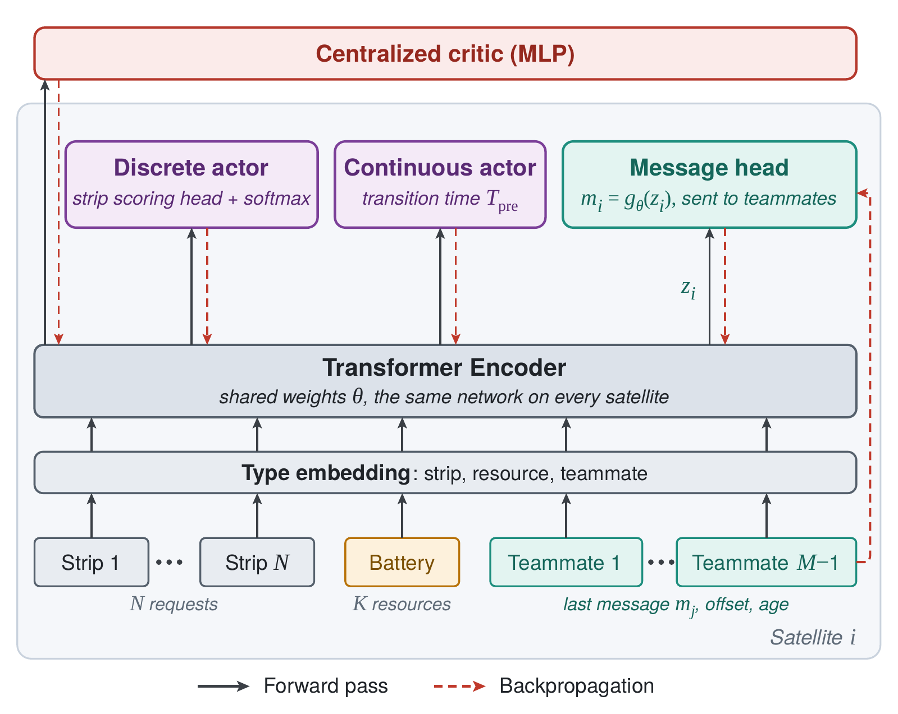

Continuous monitoring of the Earth needs two kinds of satellites: scanners that detect events such as floods, wildfires and storms over wide areas, and high-resolution imagers that take detailed pictures of them. This work brings the parts of my thesis together. One sweep imaging satellite detects events and turns them into strip requests, and several clusters of strip imaging satellites image those strips.
The coordination is learned with reinforcement learning at two levels: first within a cluster, where the satellites must share the strips without imaging any of them twice, then across the constellation, where the sweep satellite can only talk to a cluster while it is in sight.

The satellites of a cluster share the request set and see nearly the same ground, so most strips can be imaged by any of them. Each one decides asynchronously, when its previous task ends, and a strip imaged by one disappears from the requests of the others. The reward is cooperative: a second image of the same strip earns nothing.
Every satellite runs the same policy, the safety-aware HOP-PPO with two additions: one input token per teammate, holding its last message, its along-track offset and the age of the message; and a message head, which turns the pooled output of the transformer into the message broadcast to the teammates. The messages are learned end to end with a centralized critic, and executed in a decentralized way, each satellite running its own copy. The learned messages will be compared with intent sharing, where satellites broadcast the task they chose (Stephenson et al.).
The sweep satellite flies on a higher orbit than the clusters and can only communicate with one while it is in line of sight, a few minutes at a time. As in NASA's Sensorweb, each event it detects becomes a set of strip requests whose priority decays with time.
At each contact, it decides for every pending request whether to hand it over to the cluster in sight or keep it for a cluster met later, depending on their orbits, their resources and the strips they already hold. It is rewarded with the priority each of its requests still has when a strip satellite images it, so an early hand-over to the right cluster earns more. Its vision transformer gains the messages of the clusters and one token per pending request as inputs, and a sweep-or-communicate decision with one keep-or-send output per request. It will be compared with a heuristic that stops sweeping whenever a cluster is in sight with requests pending, and hands them all over.